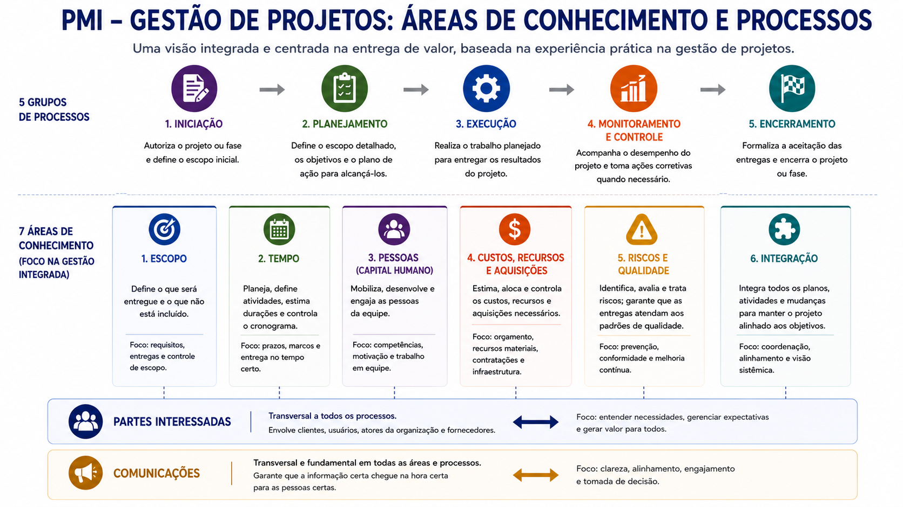
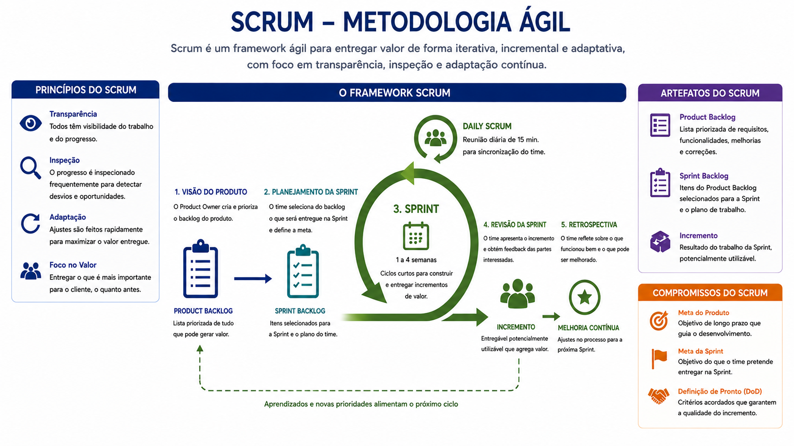

2.7 / metodologias e referenciais
Dois referenciais que serão discutidos no curso: PMI e Scrum
O curso utiliza o PMI como referência para organizar processos de gerenciamento e áreas de conhecimento, e o Scrum como referência de um framework ágil baseado em ciclos curtos, inspeção, adaptação e entrega incremental de valor. Eles não precisam ser tratados como alternativas excludentes: respondem a necessidades distintas e podem coexistir em contextos híbridos.
PMI — áreas de conhecimento e grupos de processos

A visão adotada no curso
Partes interessadas e comunicações são tratadas como dimensões transversais: relacionam clientes, atores internos e fornecedores e sustentam alinhamento, engajamento e tomada de decisão ao longo de todos os processos.

Scrum — ciclos curtos, inspeção e adaptação

Metodologias e artefatos devem ser utilizados pelo valor que agregam ao projeto, não pela conformidade burocrática. Discernimento gerencial significa selecionar e adaptar instrumentos ao contexto do empreendimento.